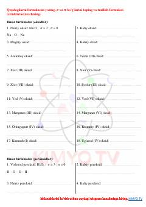

SVKimyoviy birikmalarning strukturasi va bog'lanishlarini aniqlash bo'yicha amaliy mashqlar to'plami.
Ushbu qo'llanma kimyoviy birikmalarning strukturaviy formulalarini yozish, sigma va pi bog'lanishlarni aniqlash bo'yicha amaliy mashqlarni o'z ichiga oladi. Unda oksidlar, gidridlar, kislotalar va tuzlar uchun kimyoviy bog'lanishlarni tahlil qilish bo'yicha topshiriqlar keltirilgan.